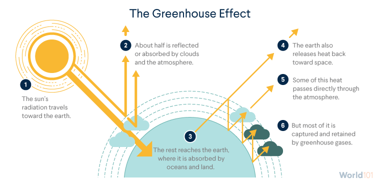

Climate ScienceExtreme WeatherIndia FocusJune 2026 · 12 min read
The Summers You Remember Are Gone
Something Has Changed. You Can Feel It.
June 5, 1996.
The morning came at about 26 degrees. A ceiling fan was enough. The milkman arrived before anyone was properly awake, the pressure cooker whistled somewhere inside, and the day moved forward with a momentum that did not feel like a fight. By afternoon it was hot, the honest, declared Indian summer hot, the kind that earned a nimbu pani and a mandatory stillness in the shade. But by seven in the evening there was a breeze. Chairs were dragged to the terrace. Conversations happened. The heat had shape: it arrived, peaked, and left.
June 5, 2026.
Last night at 1 AM, the phone showed 30 degrees in New Town, Kolkata. Feels like 32. The AC was running. The fan was also running. The window was sealed shut. Somewhere outside, the city was being gently steamed at a temperature it was not built for. I now have a working theory about how momos feel.
Spring and autumn did not vanish overnight. They compressed, year by year, into thinner slivers between extremes that keep extending in both directions. February ends into heat. October barely recovers before the cycle starts again. The seasons that gave Indian summers their edges — arrival, peak, relief, recovery — have been replaced by one long, reluctant sweat with brief interruptions.
The AC running on a 30-degree midnight is burning the energy that makes the next midnight warmer. Adapting to climate change is not the same as solving it.
Know Your Future
The Doomsday Slider
Drag the slider across global warming levels. Every outcome shown is drawn from peer-reviewed research — IPCC AR6, WMO, NASA, and Nature Climate Change. Not speculation. Published consensus.
+1.2°C+1.5°C+2.0°C+2.5°C+3.0°C
Rare+1.2°C
Sources: IPCC AR6 (2021–2023) · WMO State of the Global Climate 2023 · NASA GISS · Nature Climate Change · World Bank Climate Portal. Effects shown are mid-range projections. Actual impacts depend on regional conditions, adaptation measures, and emissions trajectories.
The Record
Section 01
What the data shows
India's mean surface temperature has risen by approximately 0.6 degrees Celsius over the past century. That number does not carry its own weight until you consider that the difference in average temperature between an ice age and today is roughly 4 to 7 degrees Celsius. Sustained fractions of a degree, held over decades, reorganise ecosystems and shift monsoon belts.
+0.6°C
India's mean temperature rise over the past century
10 of 10
The last 10 years are the 10 warmest in recorded global history
+1.45°C
2023 global temperature above pre-industrial average, a record at the time
422 ppm
Atmospheric CO₂ today, up from 280 ppm before industrialisation
The warming is not evenly distributed across the calendar. Night-time temperatures have risen faster than daytime temperatures. Winter and post-monsoon warming has been sharper than summer. This means the cold relief that once followed the heat, the October cool, the December chill, the January mornings that required a jacket, is exactly where the change is most legible. The heat is not just hotter. The recovery from heat is shorter.
Chart 01
India's Rising Temperature: Departure from the 1951–1980 Average (°C)
Values above zero are warmer than the historical baseline. The persistent shift from cool to warm is visible from the late 1970s onward and has accelerated sharply since 2000.
Source: India Meteorological Department (IMD); NASA GISS Surface Temperature Analysis. Anomaly relative to 1951–1980 mean. Decadal resolution; data are approximate and illustrative of published trend.
The monsoon has become erratic in ways that directly affect the 700 million Indians whose livelihoods depend on it. Total annual rainfall has not changed dramatically, but its pattern has: more rain in fewer, more intense events, punctuated by longer dry spells within the monsoon window itself. In the Bay of Bengal, the post-monsoon cyclone season now sees a marked increase in rapid intensification events, storms that jump from moderate to catastrophic strength in 24 to 48 hours. Cyclone Fani (2019), Amphan (2020), and Biparjoy (2023) are not isolated events. They are a progression.
2,500+
People killed in the 2015 heat wave across Andhra Pradesh and Telangana, in a matter of weeks. This figure likely understates reality: heat accelerates existing conditions such as heart failure and kidney disease, which appear as the primary cause of death rather than heat itself. The reported toll of extreme heat in India is a systematic undercount.
Chart 02
India's Climate Calendar: The Shrinking Seasons
Approximate seasonal duration, 1970s versus 2020s. Spring once occupied 6 to 8 weeks of March and April. It has compressed to under three weeks in most of India. Summer has expanded into its space.
Schematic representation based on observed temperature and phenological data. Proportions are approximate. Sources: India Meteorological Department; published seasonal shift studies.
Section 02
The physics behind the heat
How It Works
The Greenhouse Effect: A Step-by-Step Mechanism
Not a theory. Basic physics, confirmed in every measurable detail since the 1850s. The same mechanism that bakes a car in a summer parking lot — operating at planetary scale.

Mechanism based on established atmospheric physics, first calculated correctly by Eunice Newton Foote (1856). Sources: IPCC AR6 WG1 Chapter 7; NOAA Earth System Research Laboratory.
Three gases drive the majority of this warming.
CO₂
Carbon Dioxide
The primary and longest-lived warming agent. Persists in the atmosphere for hundreds to thousands of years.
From burning coal, oil and gas; deforestation; cement production.
422 ppm
Today, vs 280 ppm pre-industrial. A 51% increase.
CH₄
Methane
Shorter-lived than CO₂ but acts much faster. Has more than doubled since pre-industrial times.
From livestock, rice paddies, landfills, and oil and gas leaks.
80×
More potent than CO₂ over 20 years (GWP20).
N₂O
Nitrous Oxide
Far smaller in volume than CO₂ but highly potent. A significant factor in agricultural systems.
From synthetic fertilisers, manure management, and certain industrial processes.
265×
More potent than CO₂ over 100 years (GWP100).
The Carbon Lag: Why Urgency Is Not Exaggerated
There is a delay of roughly 20 to 40 years between when emissions enter the atmosphere and when their full warming effect is realised. The heat of May 2024 is partly the consequence of emissions from the 1990s and 2000s. The warming caused by today's emissions will be felt most severely by people who are currently children. This lag is not a reason for comfort. It means we are already committed to further warming regardless of what we do next. Acting now determines how much further beyond that committed warming we go.
Carbon dioxide concentration stood at 280 parts per million before industrial activity began. It stands today at over 422 parts per million. A 51 percent increase in the atmospheric thermostat, driven almost entirely by human choices.
Chart 03
Atmospheric CO₂ and Global Temperature Anomaly, 1960–2024
As atmospheric carbon dioxide has risen continuously, global mean temperatures have followed. The correlation reflects basic atmospheric physics operating at planetary scale. The gap between the two lines is closing as feedback mechanisms amplify the effect.
Sources: NOAA Global Monitoring Laboratory (Mauna Loa CO₂ Record, Keeling Curve); NASA GISS Surface Temperature Analysis (GISTEMP v4). Data to 2024. Temperature is global mean surface temperature anomaly relative to 1951–1980 baseline.
Three Feedback Loops That Amplify Warming
Arctic ice melt replaces white reflective surfaces that bounce sunlight back into space with dark ocean water that absorbs it. Every square kilometre of lost ice makes further warming more likely.
Permafrost thaw in Siberia and Canada releases methane and CO₂ stored in frozen soil for thousands of years. Warming triggers release, which triggers more warming.
Warmer oceans absorb less CO₂, progressively weakening the planet's single largest natural carbon buffer at precisely the moment it is needed most.
Section 03
What we stand to lose
The impacts are not projections for 2100. Several are already in early stages. Agriculture, water security, and financial risk are all registering measurable change. India sits near the top of every global climate vulnerability index.
6–23%
Projected decline in India's wheat yields by end of century under moderate warming
500M
People dependent on Himalayan glacier-fed rivers; those glaciers are retreating
$1.3T
Global climate finance mobilised in 2023, vs $4T+ needed annually through 2050
90%
Fall in solar energy costs since 2010; the transition is real but the pace still lags what the science requires
The rabi wheat crop is sensitive to heat stress during its grain-filling stage in February. Multiple years in the past decade have seen premature heat spikes in this window, reducing yields across Punjab and Haryana. The insurance sector has already begun to price what governments are still reluctant to name plainly: property insurers in flood-prone coastal zones are repricing or withdrawing cover, and reinsurers have incorporated explicit climate risk into catastrophe models for over a decade. The financial system's risk radar is detecting signals that have not yet fully entered public-policy language.
Chart 04
India's Rising Toll: Severe Cyclones and Heat Wave Deaths by Decade
Severe cyclone frequency in the Bay of Bengal has increased. Estimated heat wave mortality has grown alongside it. Better early-warning systems have reduced deaths in recent years, but the underlying physical intensity of these events continues to rise.
Sources: India Meteorological Department; National Disaster Management Authority (NDMA); published epidemiological literature. Cyclone counts: VSCS, ESCS, and Super Cyclone categories in Bay of Bengal. Heat wave deaths are approximate cumulative aggregates from multiple sources and are likely undercounted.
India's Climate Paradox
Among the most vulnerable nations on Earth. Among the top four emitters by volume.
This is not a contradiction. It is the defining tension of India's relationship with climate change. Historically low per-capita emissions. Rapidly growing absolute output. A population exposed to the full physical force of consequences it largely did not cause. Understanding this simultaneously is the only honest starting point for what comes next. India cannot afford either complacency or victimhood. It requires both domestic ambition in the energy transition and a rightful demand that historically high-emitting countries deliver the climate finance they have committed to and consistently underdelivered.
Top 4GHG emitter globally by absolute volume
~1.9tCO₂ per capita annually, vs 14.9t in the US
500MPeople reliant on glacier-fed rivers now retreating
Section 04
Late. But not too late.
The physics is settled. The warming is measurable. The causes are understood. What remains genuinely open is the question of scale: how much warming, over how long, with what consequences for which communities. Every fraction of a degree prevented is millions of people whose futures are measurably safer.
What Still Matters
Four things the evidence actually supports.
We are late. We are not too late. The difference between 1.5°C and 2.5°C of warming describes profoundly different futures for hundreds of millions of people. That difference is still being determined by choices being made right now.
01
The Energy Transition
Renewables are winning on cost. The question is pace.
Solar costs fell more than 90 percent since 2010. India added more than 13 gigawatts of new solar capacity in a single financial year. Global renewable capacity is growing faster than any model from a decade ago predicted. The direction is right. The speed is not yet sufficient.
SignalEvery year of faster deployment buys measurable safety margin. The energy transition is not a future aspiration. It is happening now, and in India faster than most acknowledge.
02
Climate Finance
Capital is moving. The gap is still vast.
Climate finance reached $1.3 trillion globally in 2023. Estimates of what is needed run to $4 trillion or more annually through 2050. The direction of capital is correct. The volume is not yet close to what the science requires, and the shortfall falls disproportionately on developing economies.
SignalDeveloped countries' unfulfilled commitment to climate finance for developing nations is not a technicality. It is one of the central leverage points remaining in global climate negotiations.
03
Individual and Collective
Personal choices are not the solution. They are the soil.
The concept of the personal carbon footprint was popularised partly to shift responsibility toward individuals rather than producers and regulators. Acknowledging that does not make individual action irrelevant. Societies reducing fast fashion, examining single-use plastics, choosing repair over replacement, and questioning high-carbon consumption also tend to generate the political will for structural change.
SignalBuy less. Repair more. Reduce single-use plastics. Ask where things come from. These are not the solution. They are part of the political conditions in which a solution becomes possible.
04
The Honest Maths
Every fraction of a degree prevented matters.
The choice is not between a perfect outcome and catastrophe. It is between degrees of safety and degrees of harm. Limiting warming to 1.5°C and allowing 2.5°C describe fundamentally different futures for coastal cities, agricultural systems, and water security across the Global South.
SignalUrgency without despair is the only stance that drives action. We are late. We are not too late. That language matters as much as the policy.
1.5
The difference between 1.5°C and 2.5°C of warming is not a number on a graph. It is the difference between manageable disruption and cascading crisis for hundreds of millions of people. Every year of faster action narrows the gap between those two futures. Every year of delay makes the worse future harder to avoid.
Sources & Further Reading
India Meteorological Department (IMD): Annual Climate Summary reports; observed temperature anomaly data series
NASA GISS Surface Temperature Analysis (GISTEMP v4): global mean surface temperature anomaly, 2024 update
NOAA Global Monitoring Laboratory: Mauna Loa CO₂ Record (Keeling Curve), 1958–2024
World Meteorological Organization (WMO): State of the Global Climate 2023; 1.45°C above pre-industrial average confirmed